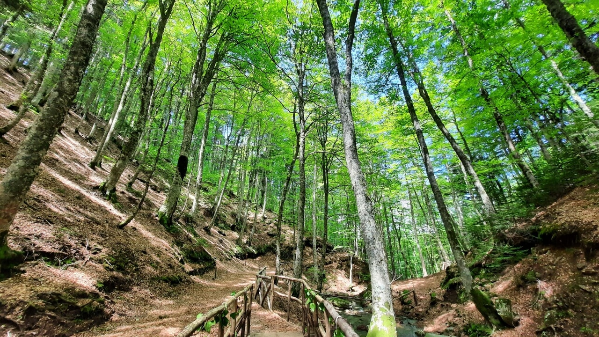

Alle spalle della città si apre un mondo completamente
diverso: in meno di un'ora potrete passare dalle acque
cristalline dello Stretto di Messina ai verdi boschi
dell'Aspromonte, una montagna antica che custodisce
un territorio di grande bellezza e il
Parco Nazionale dell'Aspromonte
.
Se desiderate trascorrere una giornata immersi nella
natura, vi consigliamo di raggiungere Gambarie, il
principale centro turistico dell'Aspromonte, e di
esplorare i suoi boschi e i suoi paesaggi.
Potete raggiungere Gambarie con l'autobus 319, che parte
da Piazza Garibaldi, a pochi passi dall'appartamento,
oppure in auto, in circa 30 minuti.
Prima della partenza vi consigliamo di verificare sempre
gli orari aggiornati degli autobus
.
Per maggiori informazioni sul territorio, sui percorsi
e sui luoghi da visitare, potete consultare il sito
ufficiale del
Parco Nazionale dell'Aspromonte
.